指令流水 链接到标题
如何提高机器速度 链接到标题
-
提高访存速度
- 高速存储芯片
- 高速 Cachhe
- 多体并行结构
-
提高 I/O 和主机之间的传送速度
- 中断
- DMA
- 通道
- I/O 处理机
- 多总线结构
-
提高运算器速度
- 高速芯片
- 改进算法
- 快速进位链
-
提高整机处理能力
- 高速器件
- 改进系统结构，开发系统的并行性
系统的并行性 链接到标题
并行的概念 链接到标题
- 并发，两个或两个以上事件在同一时间段发生
- 同时，两个或两个以上事件在同一时刻发生
并行性的等级 链接到标题
- 过程级(程序、进程)，粗粒度，软件实现。
- 指令级(指令之间，指令内部)，细粒度，硬件实现。
指令流水的原理 链接到标题
指令的串行执行 链接到标题
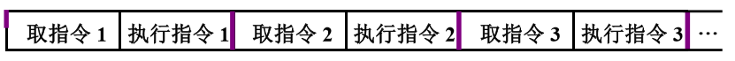
一条指令的执行需要经过三个阶段，取指令、译码、执行，每个阶段都需要花费一个时钟周期，如果没有采用流水线技术，那么执行 N 条这样的指令就需要 3N 个时钟周期，假设取指令用取指令部件完成，执行指令用执行指令部件完成，那么总有一个部件空闲，如图所示。
指令的二级流水 链接到标题
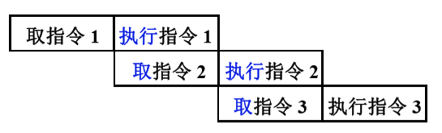
若取指和执行阶段时间上完全重叠，在执行指令 1 时，取指令部件空闲，用来取指令 2，这样可以使指令周期减半，速度提高一倍。
影响指令流水效率加倍的因素 链接到标题
执行时间 > 取指时间 链接到标题
条件转移指令对指令流水的影响 链接到标题
必须等上条指令执行结束，才能确定下条指令的地址，造成了时间损失，可以采用猜测法，先不管执行结果，指令部件仍按顺序预取下一条指令，这样，如果条件不成立，转移没有发生，则没有时间损失，若条件成立，转移发生，则所取的指令必须丢掉，再取新的指令。
指令的六级流水 链接到标题
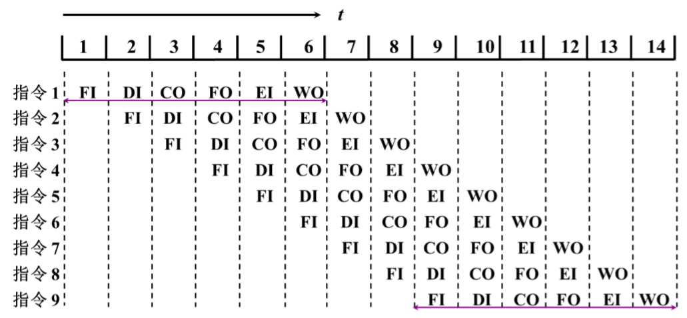
将指令周期分为取指令(FI)、指令移码(ID)、计算操作数地址(CO)、取操作数(FO)、执行指令(EI)、写操作数(WO)6 个阶段，形成了六级流水，完成一条指令需要 6 个时间单位，串行执行总共需要 6×9=546×9=54 个时间单位，六级流水需要 14 个时间单位。
影响指令流水线性能的因素 链接到标题
结构相关 链接到标题
不同指令争用同一功能部件产生资源冲突，如下图，指令 1 与指令 4 冲突，指令 2 与指令 5 冲突，指令 1、3、6 冲突
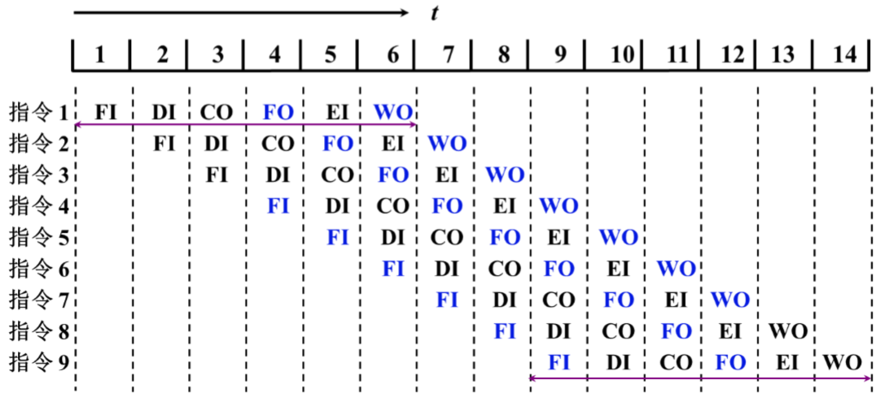
解决办法：
- 停顿法，等前面的指令完成操作，后面的指令在进行操作
- 指令存储器和数据存储器分开
- 指令预取技术，设置缓冲区，空闲的单位提前缓存数据或读取数据，适用于访存周期短的情况
数据相关 链接到标题
在一个程序中，如果必须等前一条指令执行完毕后，后一条指令需要前一条指令执行的结果才能执行，那么这两条指令就是数据相关，不同指令因重叠操作，可能改变操作数的读/写，访问顺序.
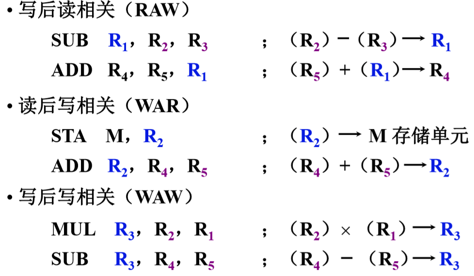
解决办法： 后推法，采用旁路技术，旁路技术就是操作结果出来后，直接送入下一条指令，不需要先存入寄存器。
控制相关 链接到标题
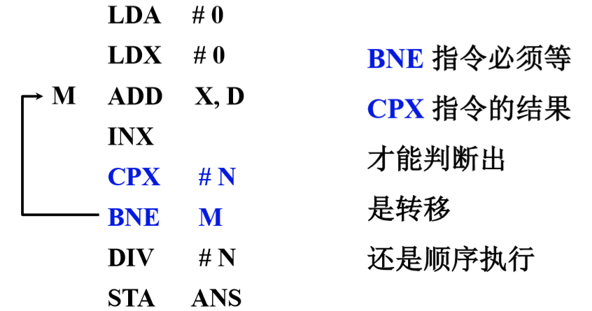
控制相关冲突由转移指令引起，当执行转移指令时，依据转移条件的产生结果，可能顺序执行下一条指令，也可能转移到新的目标地址取指令，从而使流水线发生断流。
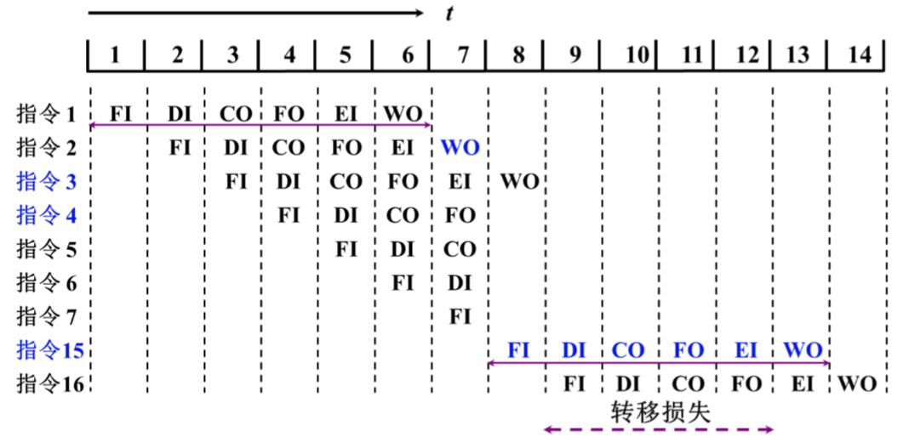
解决办法：采用猜测法技术，机器先选定转义分支中的一个，按它取指并处理，条件码生成后，如果猜测正确，那么流水线继续进行下去，如果猜测错误，那么之前预取的指令失效。
流水线性能 链接到标题
吞吐率 链接到标题
单位时间内流水线所完成指令或输出结果的数量
- 设 m 段的流水线各段时间为
$\Delta t$ - 最大吞吐率：
$T_{pmax} = \frac{1}{\Delta t}$ - 实际吞吐率（连续处理 n 条指令的吞吐率）：
$T_p = \frac{n}{m\Delta t + (n-1)\Delta t}$
加速比$S_p$
链接到标题
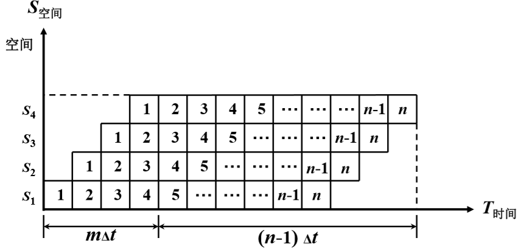
流水线中各功能段的利用率，由于流水线有建立时间和排空时间，因此各功能段的设备不可能一直处在工作状态,效率就是流水线中各功能段的利用率.
效率 = 流水线各段处于工作时间的时空区/流水线中各段总的时空区=$mnΔt/m(m+n−1)Δt$
流水线的多发技术 链接到标题
超标量技术 链接到标题
- 每个时钟周期内可并发多条独立指令，配置多个功能部件
- 不能调整指令的执行顺序，通过编译优化技术，把可并行执行的指令搭配起来
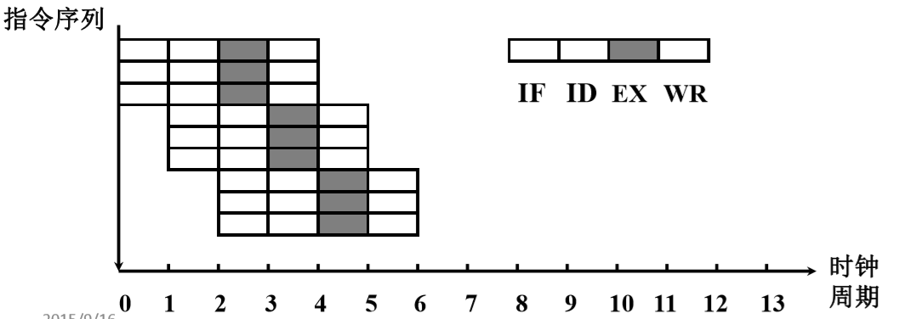
超流水线技术 链接到标题
- 在一个时钟周期内再分段，在一个时钟周期内一个功能部件使用多次
- 不能调整指令的执行顺序，靠编译程序解决优化问题
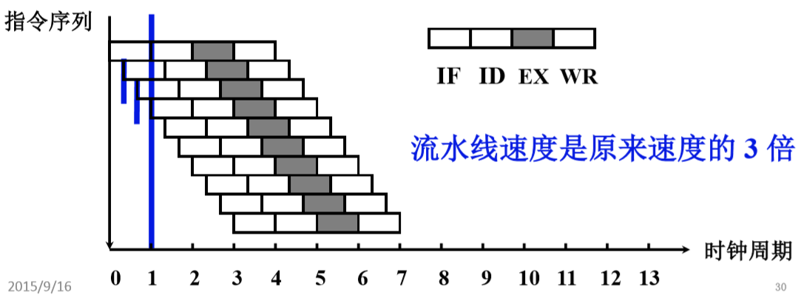
超长指令字技术 链接到标题
- 由编译程序挖掘出指令间潜在的并行性，将多条能并行操作的指令组合成一条具有多个操作码字段的超长指令字。
- 采用多个处理部件
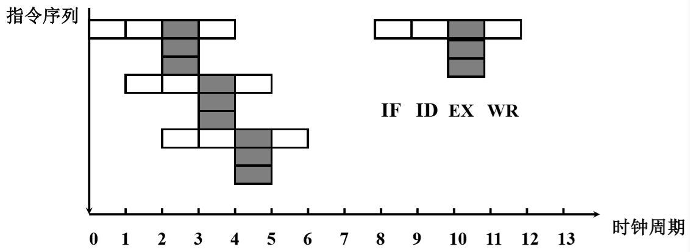
动态流水线 链接到标题
动态流水线就是多种运算可以同时进行，而静态流水线只能是一种运算进行完在进行下一种运算。
流水线结构 链接到标题
指令流水线结构 链接到标题
完成一条指令分 6 段，每段需要一个时钟周期。
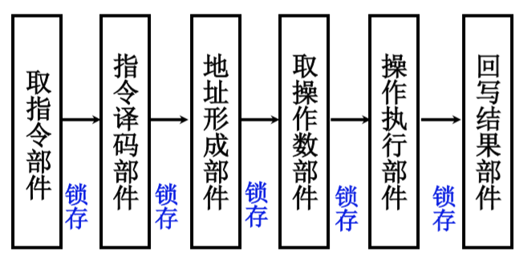
若流水线不出现断流，一个时钟周期出一个结果，不采用流水技术，6 个时钟周期出一个结果，理想情况下，6 级流水的速度是不采用流水技术的 6 倍。
运算流水线 链接到标题
完成浮点加减运算，可分对阶、尾数求和、规格化三段，每段操作时间尽量一致。
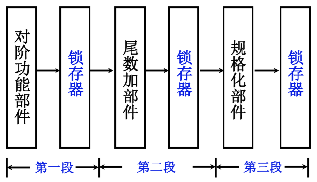
中断系统 链接到标题
概述 链接到标题
引起中断的各种因素 链接到标题
- 人为设置的中断，如转管指令。
- 程序性事故，溢出、操作码不能识别、除法非法
- 硬件故障
- I/O 设备
- 外部事件，用键盘中断现行程序
中断系统需要解决的问题 链接到标题
- 各中断源如何向 CPU 提出请求？
- 各中断源同时提出请求怎么办？
- CPU 什么条件、什么时间、以什么方式响应中断？
- 如何保护现场？
- 如何寻找入口地址?
- 如何恢复现场，如何返回？
- 处理中断的过程中又出现新的中断怎么办？
中断请求标记和中断判优逻辑 链接到标题
中断请求标记(INTR) 链接到标题
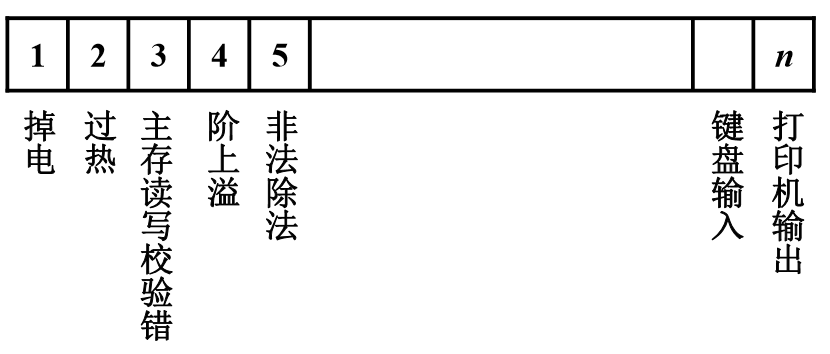
如何向 CPU 提出请求，给每一个中断源，配置一个 INTR 中断请求标记触发器，来判断是否发出了中断请求，多个中断源有多个 INTR，这些 INTR 逻辑上组成了中断请求标记寄存器。
INTR 可以分散在各个中断源的接口电路中，也可以集中在 CPU 的中断系统内。
中断判优逻辑 链接到标题
-
硬件实现(排队器)
- 分散在各个中断源的接口电路中，使用链式排队器实现
- 集中在 CPU 内 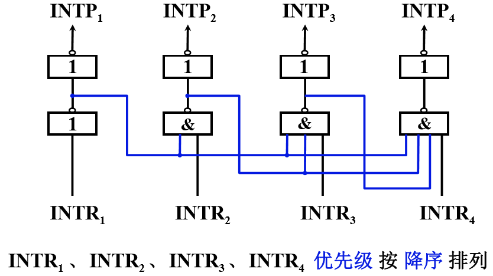
- 图中 INTR_1=1，就可以封住比它级别低的中断源请求，INTR_1=1 经过非门电路，会变成 0 信号，那么通过中间那根线传递给 INTR_2 等的都是 0 信号，”&”与门，只要输入端有”0”信号就过不去，所以 INTR_1=1 时可以封住比它级别低的中断源的请求。
-
软件实现 软件实现中断判优只需要写一段程序，并按中断源的优先等级从高至低逐级查询各中断源是否有中断请求，这样就可以保证 CPU 首先响应级别高的中断源请求。
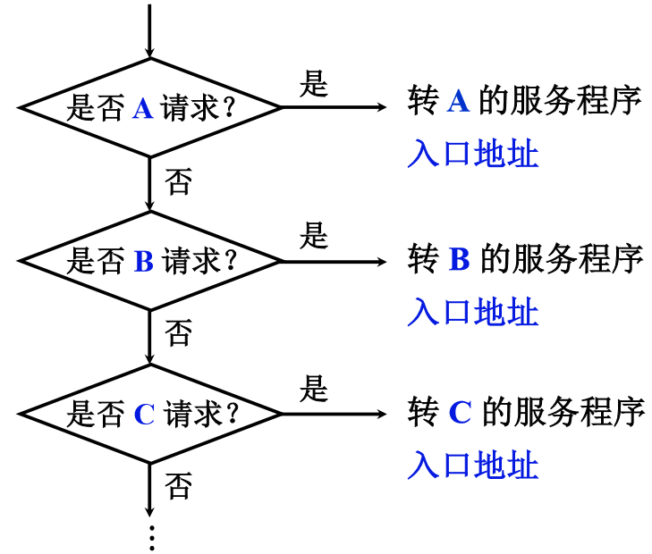
中断服务程序入口地址的寻找 链接到标题
硬件向量法 链接到标题
利用硬件产生中断向量地址，再由向量地址找到中断服务程序入口地址，向量地址是由中断向量地址形成部件产生的，如何通过向量地址找到中断服务程序入口地址？
- 当 CPU 响应中断时，将向量地址送至 PC，执行这条指令，便可无条件转向某服务程序的入口地址。
- 设置向量地址表，该表存放在存储单元内，存储单元的地址为向量地址，存储单元内容为中断服务程序入口地址，即中断向量，访问向量地址所指示的存储单元，便可获得入口地址。
软件查询法 链接到标题
查询到某一中断请求时，接着安排一条转移指令，直接指向此中断源的中断服务程序入口地址，机器便自动进入中断处理，中断源对应入口地址，由程序员或系统事先确定，下图举例。
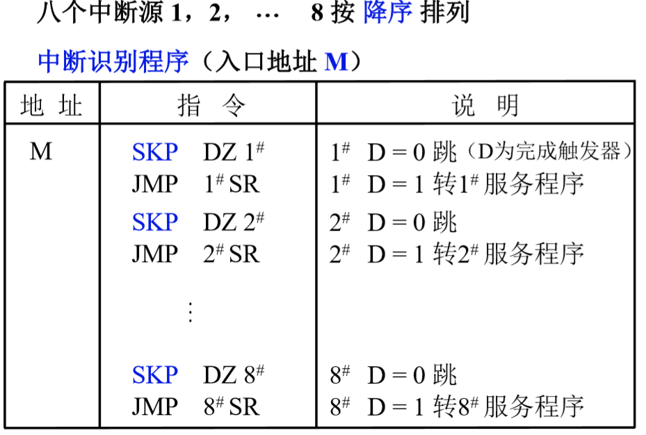
M 是入口地址，SKP 是跳过下一条指令，判断 D 是 0 还是 1
中断响应 链接到标题
- 响应中断的条件：图中有一个关中断操作，或者称为允许中断触发器 EINT，它可被开中断指令置 1，也可被关中断指令置 0，当允许中断触发器为 1 时，意味着 CPU 允许响应中断源的请求，为 0 时，意味着 CPU 禁止响应中断。
- 响应中断的时间：指令执行周期结束时刻由 CPU 发查询信号，如果由则进入中断周期，如果没有，则进行下一条指令的取指周期。
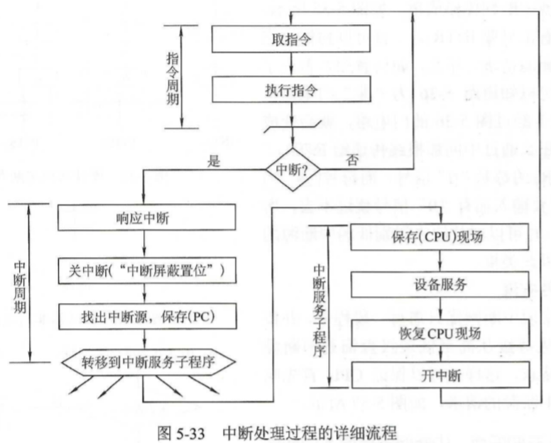
中断隐指令 链接到标题
-
保护程序断点 保护程序断点就是将当前 PC 的内容保存到特定地址内，也可以存入堆栈
-
寻找服务程序入口地址
- 向量地址->PC (硬件向量法)
- 终端识别程序入口地址 M->PC (软件查询法)
-
硬件关中断 CPU 进入中断周期意味着 CPU 响应了某个中断源的请求，为了确保 CPU 响应该中断后所做的一系列操作不至于再受到新的中断请求的干扰，在该中断周期内必须自动关中断，已禁止 CPU 再次响应新的中断请求。
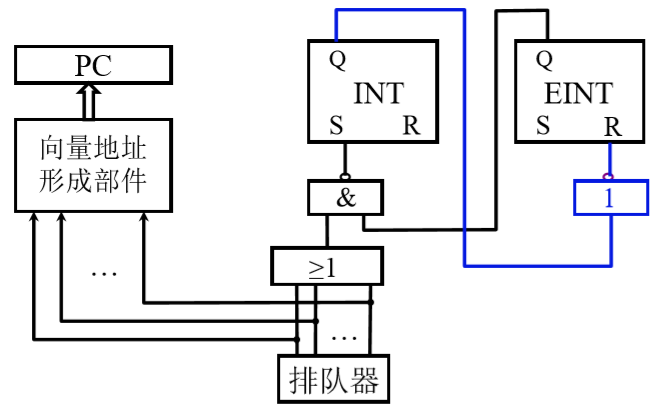
INT 中断标记，EINT 允许中断，R-S 触发器，单重中断：执行中断服务程序时不允许再发生中断，多重中断：保护程序软硬件状态的过程中，不允许发生中断。
保护现场和恢复现场 链接到标题
-
保护现场
- 断点，中断隐指令完成
- 寄存器内容，中断服务程序完成
-
恢复现场，中断服务程序完成
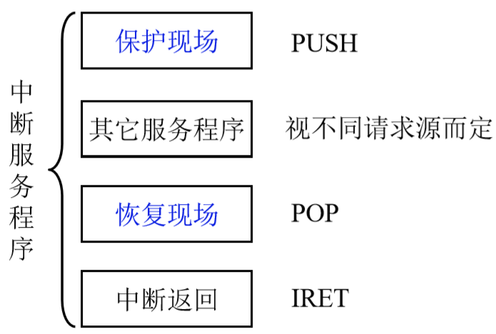
多重中断 链接到标题
多重中断的概念 链接到标题
当 CPU 正在执行某个中断服务程序时，另一个中断源右提出了新的中断请求，而 CPU 又响应了这个新的请求，于是暂停正在运行的中断服务程序，转去执行新的中断服务程序，这称为多重中断，又称为中断嵌套。
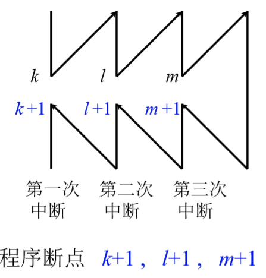
实现多重中断的条件 链接到标题
- 提前设置开中断指令
- 优先级别高的中断源有权中断优先级别高低的中断源
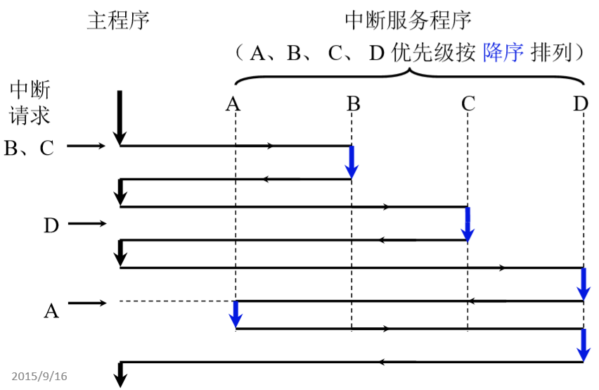
屏蔽技术 链接到标题
屏蔽触发器的作用 链接到标题
每个中断请求触发器都有一个屏蔽触发器，将所有屏蔽触发器组合在一起，便构成了一个屏蔽寄存器，屏蔽寄存器的内容称为屏蔽字，每个中断源都对应一个屏蔽字。
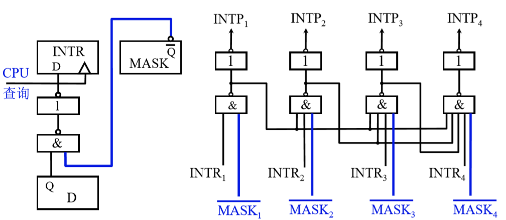
MASK=0 表示未屏蔽，
$MASK_i$表示屏蔽，INTR 能被置 1，$INTP_i=0$表示不能被排队选中。
屏蔽字 链接到标题
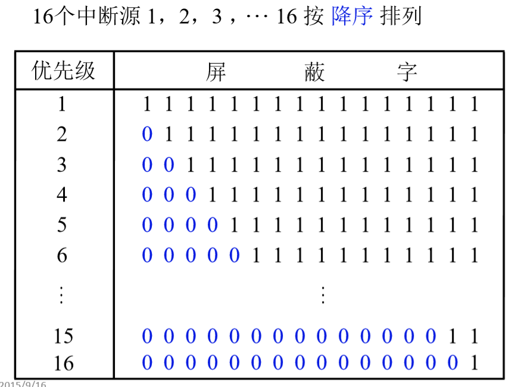
图中可以看出，优先级为 5 的屏蔽字 00001111111111111111 表示 1、2、3、4 都是比它优先级高的，这 16 位二进制数分别对应 16 个中断源。
屏蔽技术可改变处理优先级 链接到标题
- 响应优先级，不可改变
- 处理优先级，可改变(通过重新设置屏蔽字)
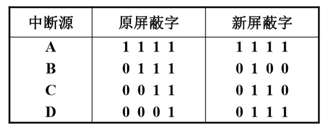
响应优先级 A->B->C->D 降序排列
处理优先级 A->D->C->B 降序排列
CPU 执行程序轨迹(原屏蔽字)：
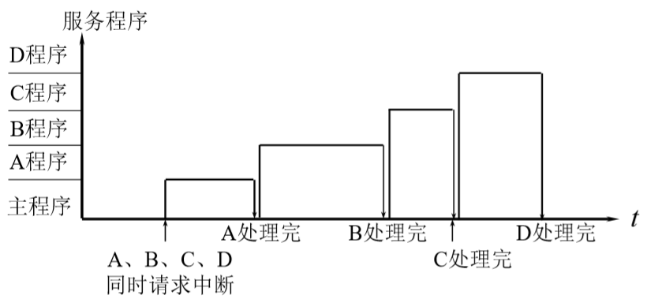
CPU 执行程序轨迹(新屏蔽字)：
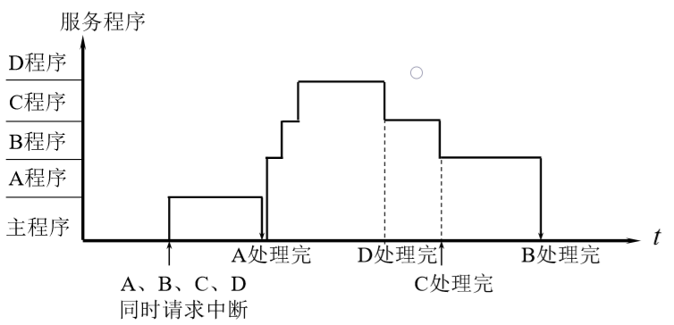
可以人为地屏蔽某个中断源地请求
新屏蔽字地设置 链接到标题
保护现场-> 设置屏蔽字-开中断-中断服务-关中断-恢复现场-恢复屏蔽字-开中断-中断返回
设置屏蔽字一定在开中断之前。
多重中断地断点保护 链接到标题
- 断点进栈，中断隐指令完成
- 断点存入”0”地址，中断隐指令完成
- 程序断点存入”0”地址的断点保护 如果进行三次中断，三个断点都存入”0”地址，为了保证断点不丢失，进行断点保护。
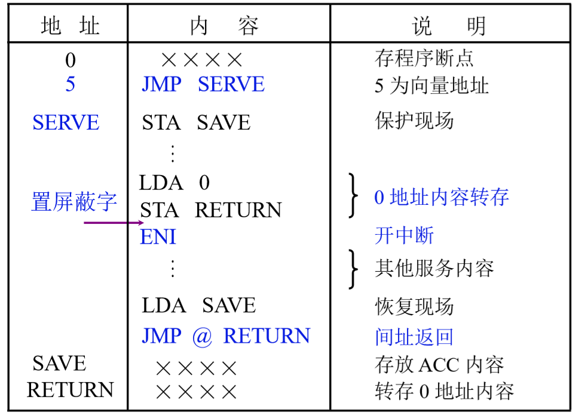